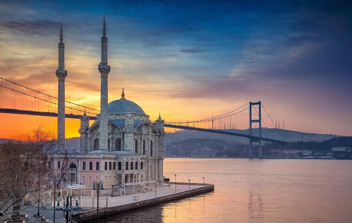

İstanbul, Asya ve Avrupa kıtalarını birbirine bağlayan jeopolitik konumu ve 2500 yılı aşkın tarihiyle dünyanın büyüleyici megakentlerinden biridir. Roma, Bizans ve Osmanlı gibi üç büyük imparatorluğa başkentlik yapmış olan bu şehir, günümüzde 15,7 milyonu aşan nüfusuyla Türkiye’nin kültürel, sanatsal ve ekonomik kalbidir.

İstanbul, yüzyıllar boyunca farklı medeniyetlere ev sahipliği yapmış tarihi ve kültürel zenginlikleriyle ziyaretçilerine unutulmaz keşif noktaları sunmaktadır.
Şehir hakkında daha fazla bilgi edinmek, güncel etkinlikleri ve resmi duyuruları takip etmek için İstanbul resmi turizm sitesine göz atabilirsiniz.
| Gün | Sabah | Öğleden Sonra | Akşam |
|---|---|---|---|
| 1. Gün | Sultanahmet Meydanı ve Ayasofya Camii | Topkapı Sarayı Gezisi | Kapalıçarşı Alışverişi |
| 2. Gün | Karaköy Kahvaltısı ve Galata Kulesi | Dolmabahçe Sarayı ve Boğaz Turu | Ortaköy Sahili ve Kumpir Keyfi |
| 3. Gün | Üsküdar Sahili ve Kız Kulesi Manzarası | Kuzguncuk Sokakları ve Kafeler | Moda Sahili ve Kadıköy Çarşısı |
Harcama tablosu için bütçe sayfasına git.